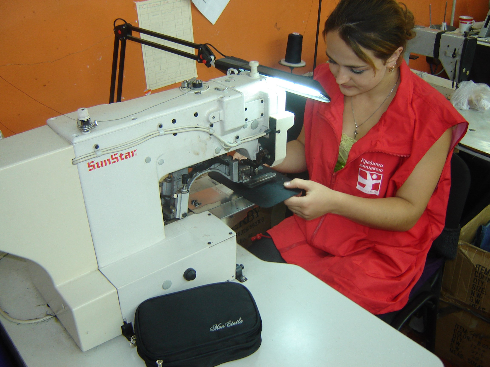
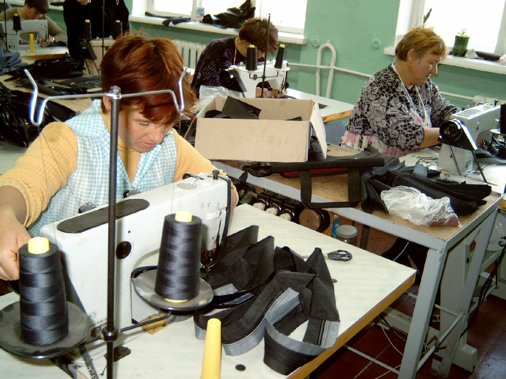
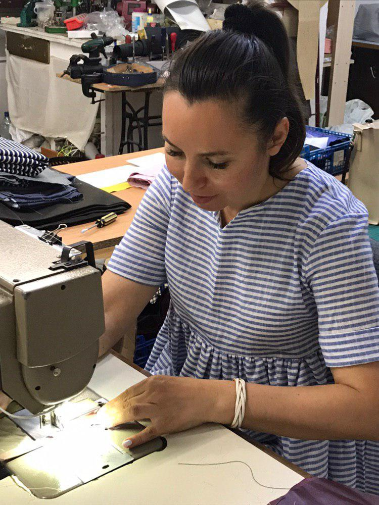
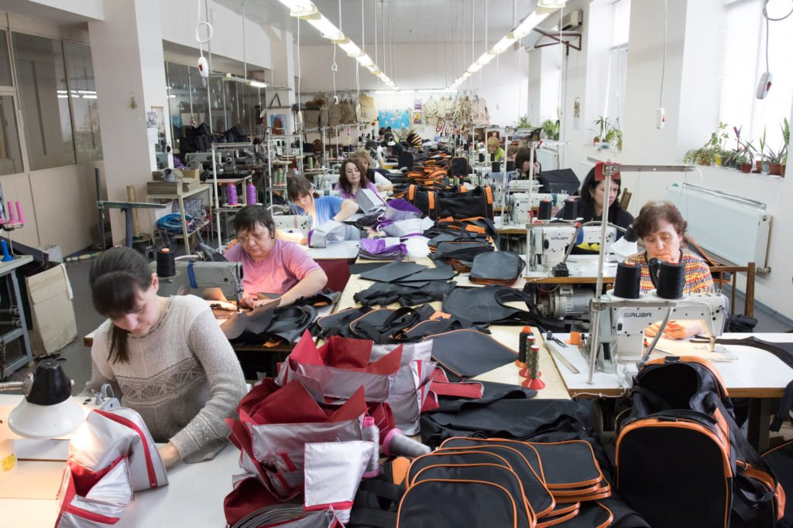

|
 |
 |
Херсон, вул.Перекопська, 166а +38(066)-00-000-00 +38(097)-00-000-00
ПОСЛУГИ
Основною метою засновників підприємства було виробництво та ремонт якісних сумок та інших шкіргалантерейних аксесуарів за доступною ціною під власним, вітчизняним брендом, замість сумнівної якості азіатських підробок відомих світових брендів.
Ми пропонуємо комплекс послуг з пошиву:
• розробку дизайну з нуля, враховуючи вимоги замовника, Ознайомитися із прайсом
• консультації та допомогу у виборі матеріалів і фурнітури, Ознайомитися із прайсом
• виготовлення зразків, внесення змін, узгодження з замовником, Ознайомитися із прайсом
• пошив продукції на власному виробництві в максимально стислий термін, Ознайомитися із прайсом
• ремонт виробів на власному виробництві в максимально стислий термін, Ознайомитися із прайсом
• доставку готової партії товару на адресу замовника, Ознайомитися із прайсом
• розрахунок в будь-який, зручній для замовника формі. Ознайомитися із варіантаим
• мінімальна кількість для пошиву та ремонту: від 1 екземпляру для стандартних та по зразкам замовника моделей.
НАШІ ПОСЛУГИ
 
розробка дизайну (2) консультації (4) виготовлення зразків (2)
 
пошив (10) ремонт (10) доставка (2)
Комплексний підхід, власні виробничі потужності і більш ніж 10-річний досвід у виробництві сумок та інших шкіргалантерейних виробів дозволяють нашим замовникам довіряти нам виготовлення вискоякісних товарів.
Ремонт одягу виконуємо з гарантією на весь сервіс робіт. Надаємо професійні послуги з пошиття та ремонту різноманітних шкіргалатерйних виробів. Швидко та якісно виконуємо замовлення різної складності на сучасному обладненню та із якісною фурнітурою.


Херсон, вул.Перекопська, 166а +38(066)-00-000-00 +38(097)-00-000-00